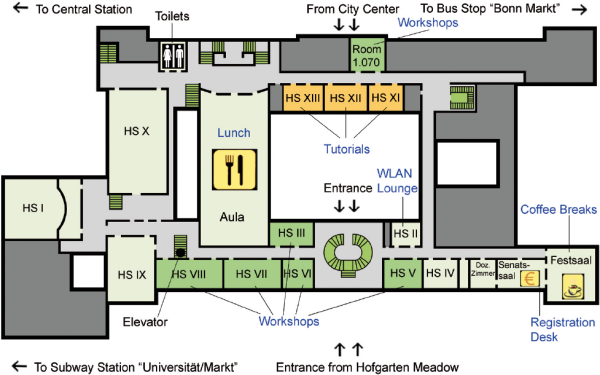
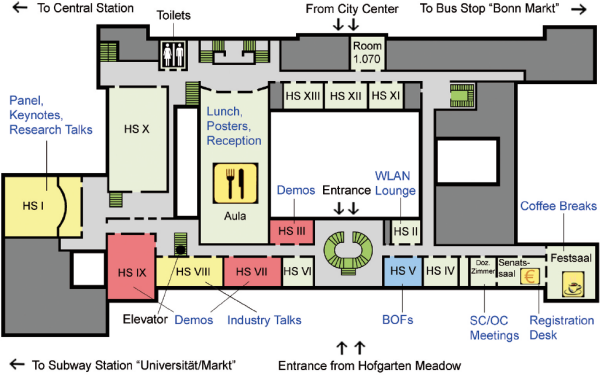
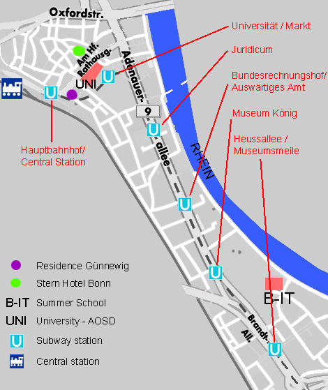

|


The Conference Venue
University main building
University of Bonn
The main conference venue is a baroque era's Electoral Palace, which today houses the university. It is located in the heart of Bonn, just 400m walking distance from main station and 450m to the Rhine promenade. Hotels of various categories are within 5-10 minutes walking distance. Floor plan (Monday/Tuesday)The conference area is located on the first floor of the university main building. Note: American visitors would call this floor the second floor!  Floor plan (Wednesday to Friday)The conference area is located on the first floor of the university main building. Note: American visitors would call this floor the second floor!  Bonn-Aachen IT-Center (Spring School, Sunday)Route from Central Station or "Universit‰t/Markt" subway station to B-IT-Center:
 Edited by the AOSD Conference Committee. Send comments to: webmaster  aosd.net aosd.net |